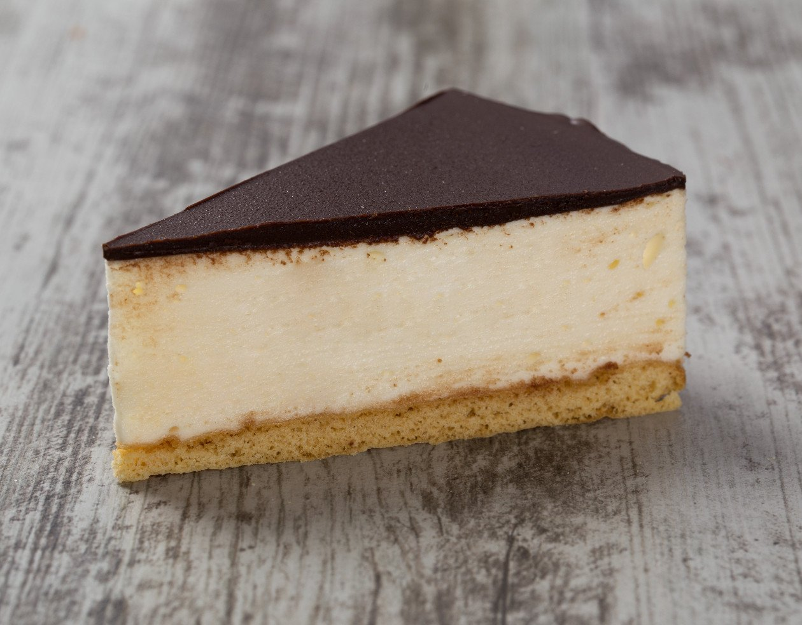

Bird's Milk Cake Recipe (Ptichye Moloko)

Description
This Bird’s Milk Cake is a combination of soft chocolate
sponge cake layers and a deliciously luscious Custard Buttercream.
Ingredients
- 10 egg yolks
- 3/4 cups sugar
- 3/4 cups whole milk
- 3 sticks unsalted butter room temperature
- 1 Tbsp vanilla extract
- 1/4 cup hot cream
- 1/4 cup semi-sweet chopped chocolate or chocolate chips
Steps
- Measure out all ingredients with a kitchen scale. Line two 8 inch round baking pans with foil or parchment paper. Put the wet baking strips, if you have them, around the baking pans. Heat oven to 350°F with the baking rack in the middle.
- Add egg whites to an absolutely grease free, thoroughly cleaned large bowl and start whipping on high until foamy, about 30 seconds.
- While continuing to whip gradually add the sugar then continue to whip for 7 minutes-10 minutes.
- Set a fine sieve over the bowl with whipped egg whites, add 120 grams of all-purpose flour and 40 grams of cocoa powder and sift. Now carefully fold the sifted mixture and meringue together until almost no streaks of dry mixture appear. You do not want to overfold so that the cake does not come out dense.
- Divide the batter between two baking pans and bake for about 20 minutes, or until a toothpick inserted in the middle comes out clean. Do not open the oven sooner than 17-18 minutes into the baking, or it will deflate.
- Remove from the oven and allow to cool in the pan for about 5 minutes, loosen the cake from the sides of the pan with a thin knife, then very carefully invert onto a cooling rack and remove the parchment or foil off the cake. Allow to completely cool.